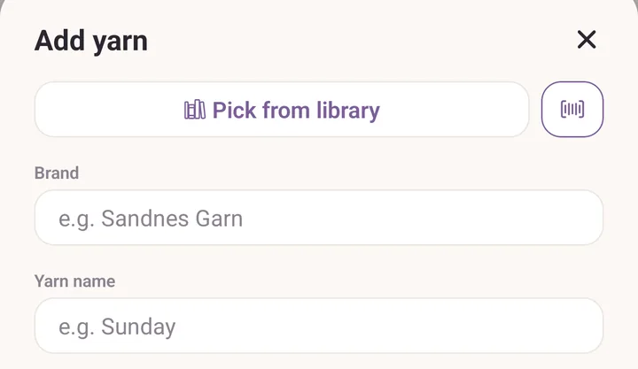
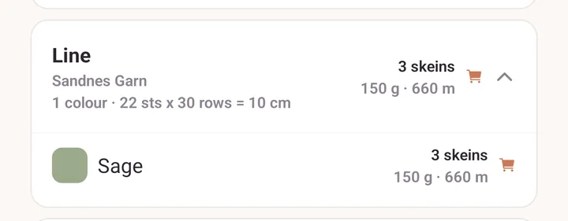
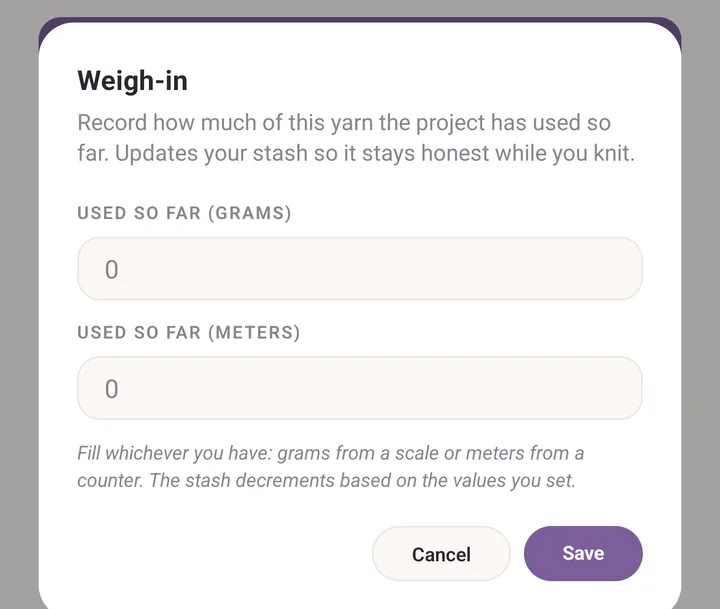
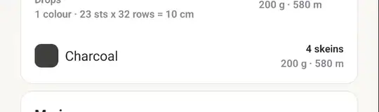
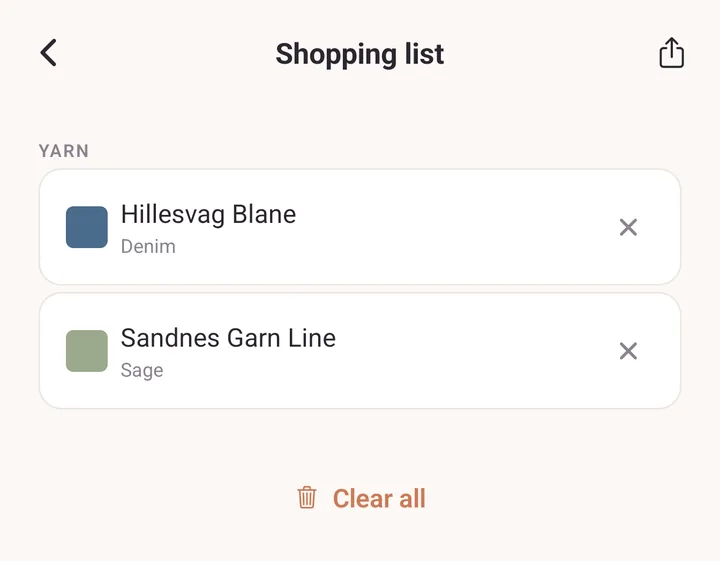

Tutorial: your yarn, in and out
By the end you will have scanned a ball band into your stash, recorded what a project has eaten so far, and sent a friend your shopping list.
Before you start: the first scan asks for camera permission, and shows a one-time note saying the Barcode scanner is still experimental. Allow the camera, tap Got it, and carry on. Part 2 needs a project with the yarn already on it, and a kitchen scale.
1. Scan a ball band into your stash
- Tap Stash, and make sure the Yarn chip is selected.
- Tap Add. The Add yarn form opens.
- At the top of the form, next to Pick from library, tap the barcode button.

Hold the ball band steady inside the frame on Scan a skein. The camera closes by itself the moment it reads a code.
If it is a colour Purl already knows you own, you get You have this colour. Tap Add a skein to put one more on the row you already have, or New dye lot to log this ball band as its own entry.
Otherwise the form fills itself in: brand, yarn name, colour, weight, fibre, metres and grams. Type the Skeins you bought and the Dye lot printed on the band.
Tap Add to stash. The new row appears under its brand and yarn name.

2. Weigh yarn in as you knit
- Tap Projects and open the project you are knitting.
- Find the yarn in the project's yarn list and tap the speedometer button on its row.
- In Weigh-in, type what the scale says into Used so far (grams), or what your yarn counter says into Used so far (meters).
- Tap Save.

- Go back to Stash. The yarn's count has dropped, part-skeins and all.
3. Build a shopping list and send it to a friend
- In Stash, swipe a yarn card to the right until To buy shows, then tap it. You can also open the yarn and tap Add to shopping list.

- A cart icon appears in the Stash header with a count on it. Tap it.
- Check the Shopping list. Tap the cross on anything you have changed your mind about.
- Tap the share icon in the header and pick how to send it. Your friend gets a plain-text list, so any messaging app will do.
- Back home, tap Clear all to empty the list. The yarn stays in your stash, only the flags come off.

If it goes wrong
- No ball band. Skip the barcode button and type Brand, Yarn name, Colour / colourway and Skeins yourself. For a yarn Purl already knows, picking the name fills in the weight and fibre for you.
- The camera reads nothing. Ball-band barcodes are small and shiny. More light, and hold the band flat. Purl reads EAN, UPC, Code 128, Code 39 and QR.
- The scan filled in the wrong colour. A barcode can be attached to the wrong shade. Fix the colour in the form before saving, and the app corrects what it remembers for that code.
- The stash count did not change after a weigh-in. Purl needs Grams / skein or Meters / skein on the yarn to turn grams into skeins. Open the yarn, tap Edit, and fill one of them in.
Next
- Yarn stash for searching, filtering and everything the stash remembers.
- Barcodes and the yarn library for what the scanner knows and how to correct it.